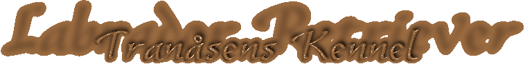
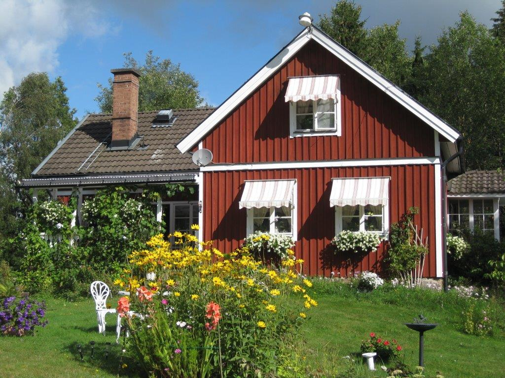
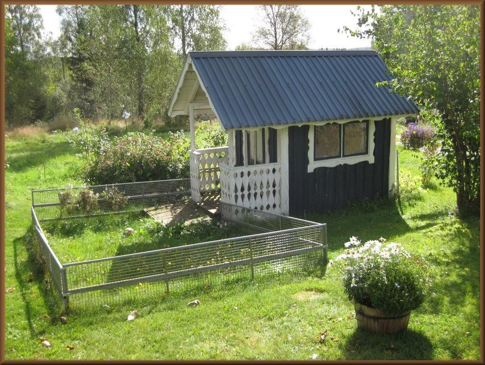
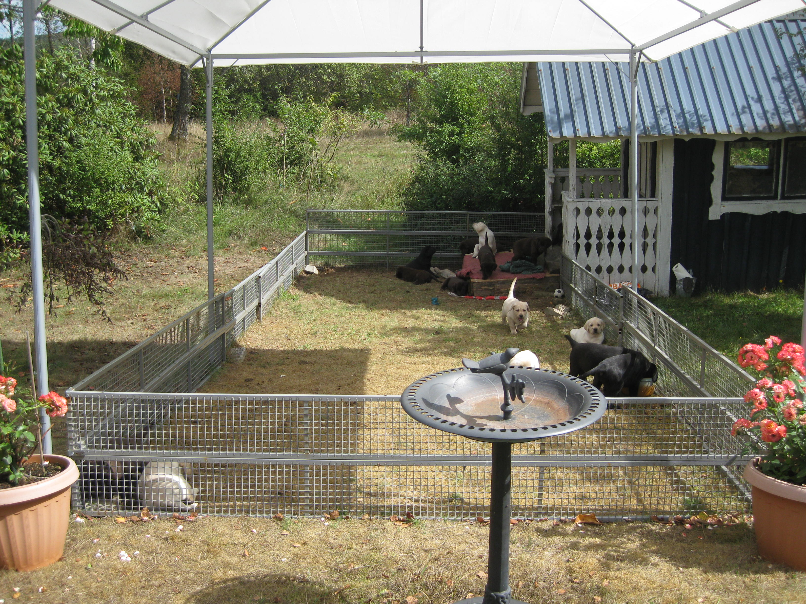

Tranåsens kennel ligger i Södra Sverige
(Småland ) 15 mil öster om Göteborg.
Närmaste stad är Värnamo.
Vår första labrador var en gul tik, hon kom till
oss 1983, hennes namn var Blondie.
Hon blev vår stamtik. Nu finns 7:e generationen tik
hos oss.
Vi har nu 5 tikar & 2 hanar, och vi föder upp alla
3 färger.
De bor alla med oss inne i huset.


Anneli Ling-Nilsson & S-O Nilsson
Åshuvud Tranåsen
334 91 Anderstorp
Mobil: 073-6877629